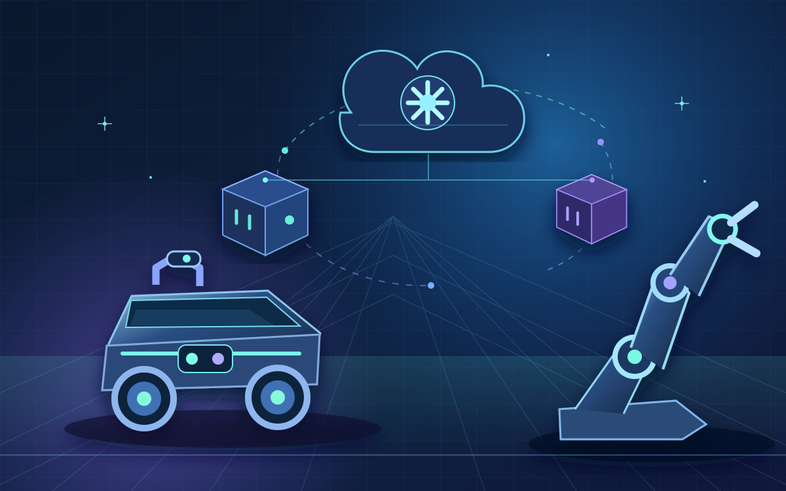

01 / INFRA
HISTORICAL PROFILELocal Kubernetes, unpacked.
Study a three-VM Vagrant + VirtualBox cluster, kubeadm bootstrap, CNI setup, and scheduling concepts—without renting a cloud cluster.
Explore cluster setupBuild systems. Observe behavior. Discover what works.
A hands-on laboratory for exploring ROS 2 on Kubernetes — from containerized robotics and DDS networking to scaling, monitoring, and meaningful experiments.
One control plane and two worker VMs in the historical VirtualBox network. Diagram is illustrative, not live telemetry.

From a local Kubernetes control plane to the messages, metrics and experiments that make robotics systems interesting.
Study a three-VM Vagrant + VirtualBox cluster, kubeadm bootstrap, CNI setup, and scheduling concepts—without renting a cloud cluster.
Explore cluster setupBuild the modern ROS 2 Jazzy image and verify talker/listener delivery inside one container. Cross-worker DDS remains a research task.
Explore ROS 2 imageExplore Prometheus and Grafana configuration, autoscaling examples, and Python/Jupyter analysis of historical experiment data.
Explore analysisA robotics application is more than a container. The lab is structured to help you investigate infrastructure, communication, and observability separately.
Read the DDS guideTwo honest starting points: a tested image-local ROS demonstration, or a historical full-cluster lab requiring substantially more resources.
Requires Docker, an amd64-capable host, and internet for image dependencies. Builds an image and checks local talker/listener communication.
git clone https://github.com/MSKazemi/Vagrant-Kubernetes-ROS2-Deployment.git
cd Vagrant-Kubernetes-ROS2-Deployment
docker build --platform linux/amd64 \
--file ROS2/Dockerfile --tag ros-jazzy-lab:local .
docker run --rm -i --platform linux/amd64 \
ros-jazzy-lab:local bash -s < scripts/test-ros2-image.shRequires Vagrant, VirtualBox and a powerful host. The legacy setup requests approximately 30 GB of VM RAM and 18 vCPUs; a fresh install is not guaranteed.
git clone https://github.com/MSKazemi/Vagrant-Kubernetes-ROS2-Deployment.git
cd Vagrant-Kubernetes-ROS2-Deployment
# On your host (historical setup)
vagrant up
vagrant ssh controlplane
# Inside the control-plane VM
kubectl get nodes -o wide
kubectl get pods -Avagrant up.Guides and source files in the repository, organized by the questions you might want to answer next.
Transparent engineering goals, not finished-feature promises. The roadmap focuses on proof, safer defaults, and accessibility.
Repeatable talker/listener communication across different Kubernetes workers.
Track issue #14 02 / TARGETEvaluate maintained CNI options and explicit discovery with meaningful tests.
Track issue #15 03 / TARGETExplore a verified kind/k3d entry point for smaller developer machines.
Track issue #16 04 / TARGETMeasured DDS, recovery and scaling experiments with raw evidence.
Track issue #18Interested in future edge robotics and AI experiments? Share a scoped proposal; those integrations are not part of the current validated lab.
Whether you're a robotics student, ROS 2 developer, cloud engineer, or researcher—there is room to improve the experiments, explain a tricky concept, and help more people learn.
Still unsure? The repository README documents limitations, commands, and version history in more detail.
Read full FAQNo. This is an educational/research lab. It is not validated for production deployment, safety-critical robots, or real-time guarantees.
No. The Jazzy image has an automated talker/listener test inside one container. Cross-worker Kubernetes/DDS communication is a separate open verification task.
Yes, the historical Vagrant setup is local and does not require a paid cloud account. It does require substantial host resources—roughly 30 GB of allocated VM RAM and 18 vCPUs—and old dependencies may need repair.
Start with the contribution guide and good-first-issue labels. You can contribute documentation, tests, or analysis without running the full Vagrant cluster. Claude Code and Codex instructions are available but optional.